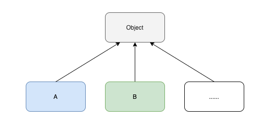
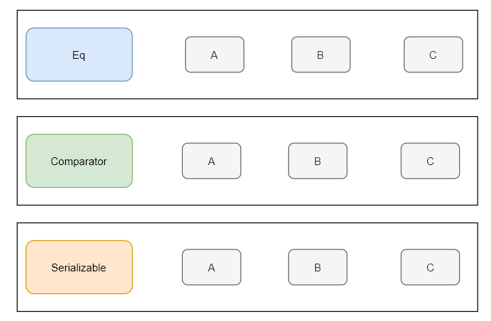

前言
作为一个 Java 开发者， class 的概念肯定是耳熟能详了，可是在山的另一边还有拥有别样风情的 type classes，但不翻过 Java 这座山，它就始终隔着一层纱。
一个经典的问题
在编程中，经常需要判断两个值是否相等，这就是判等问题， 然而在很长的一段时间内这个问题都没有一个标准的解决方案。
我这里统一使用 “值” 来代替对象、基本类型等等概念，以便于简化沟通
在 Java 中，我们可以用 == ，也可以用 equals 来判断值是否相等
public void test() {
boolean res = "hello" == "world";
boolean res2 = "hello".equals("hello");
boolean res3 = 3 == 3;
boolean res4 = 5 == 9;
}
熟悉 Java 的同学都知道对于非基础类型， equals 方法的默认实现其实就是调用 == 操作符，而 == 操作比较的是对象的引用地址
public class Object {
// ......
public boolean equals(Object obj) {
return (this == obj);
}
// ......
}
所有类都会有 equals 方法，这是因为在 Java 中默认所有类型都是 Object 的子类。
其实这也是 Java 语言处理判等问题的解决方案，即统一从 Object 中继承判等方法。

可是对于纯函数式的语言，比如 Haskell 来说，它没有 OOP 中的继承、类等概念，它又该如何优雅的解决判等的问题呢？
如果你对 Haskell 比较陌生，我们就换一种提问的方式：还有其它通用的设计方案可以解决这类判等问题吗？
当然有，Type classes 就是一种方案，不过要了解 Type classes， 还得先从多态开始。
Type classes 与多态
Type classes 结合了 ad-hoc polymorphism（特设多态）和 Parametric polymorphism （参数化多态），实现了一种更通用的重载。
问题来了，什么是特设多态、参数化多态呢？
关于多态的更多内容 ，还可以参考我的前一篇文章《多态都不知道，谈什么对象》
-
ad-hoc polymorphism（特设多态） 指的是函数应用不同类型的参数时，会有不同的行为（或者说实现）最典型的就是算术重载
3 * 3 // 代表两个整形的乘法 3.14 * 3.14 // 代表两个浮点数的乘法 -
Parametric polymorphism（参数化多态） 指的是函数被定义在某一些类型之上，对于这些类型来说函数的实现都是一样的。比如 List[T] 的
size()函数，无论 T 的类型是 String、还是 Int,size()的实现都一样List[String].size() List[Int].size()
虽然 Type classes 结合了两种多态类型，但它本身却被归到特设多态（ad-hoc polymorphism）这一分类下。
如果你想了解更多 type classes 的思想，非常推荐阅读 《How to make ad-hoc polymorphism less ad hoc》 这篇论文，它也算是 Type classes 的开篇作。
Haskell 与 Type classes
Type classes 一般译作类型类，最开始是由 haskell 引入并实现，所以我们很有必要先了解一下 haskell 中的 Type classes。
以最开始提到的判等问题为例，来看看在 Haskell 中怎么用 Type classes 去解决。
首先我们得用关键字 class 定义一个 Type class，千万不要和 Java 的 class 混为一谈。
class Eq a where
(==) :: a -> a -> Bool
(/=) :: a -> a -> Bool
注：/= 其实就是 !=
haskell 的 Type class 与 Java 的 Interface 类似，上面的 Eq 类型类就定义了 == 和 /= 两个抽象函数，其中的 a 是类型变量，类似于 Java 中的 List 中的 T。
由此看来，Type classes 只是抽象了一些共同的行为，而这些行为的具体实现会根据类型的不同而不同，具体的实现会由类型类实例来定义。
通过 instance 关键字可以创建类型类实例，下面展示了针对于于 Float 和 Int 的 Eq 类型类实例
instance Eq Int where
(==) = eqInt
(/=) = neInt
instance Eq Float where
(==) = eqFloat
(/=) = neFloat
注：我们假设 eqInt、neInt、eqFloat、neFloat 都已经由标准库实现了
这样就可以直接用 == 和/= 函数对 Int 和 Float 进行判等了
-- 判断 Int 的相等性
== 1 2
/= 2 4
-- 判断 Float 的相等性
== 1.2 1.2
/= 2.4 2.1
在调用 == 或 /= 函数时，编译器会根据参数类型自动找到类型类实例，然后调用类型类实例的函数执行调用。
如果用户需要自定义判等函数，只需要实现自己的类型类实例即可。
此时你可能会不自觉的和最开始提到的继承方案做一个对比，我画了两个图，可以参考一下
- 继承方案中，结构是一个层次型的

- Type classes 方案，结构是线性的

这样的差别就像是 Java 中 Comparable 和 Comparator 的区别一样。
Scala 与 Type classes Pattern
目前在 Java 中是无法实现 Type classes 的，但同为 JVM 的语言，多范式的 Scala 却可以实现。
但 Type classes 在 Scala 中其实也不是一等公民，也就是没有直接的语法支持，但借助于强大的隐式系统我们也能实现 Type classes，由于实现的步骤比较公式化，也就被称之为 Type classes Pattern (类型类模式)。
在 Scala 中实现 Type classes Pattern 大致分为 3 个步骤
- 定义 Type class
- 实现 Type class 实例
- 定义包含隐式参数的函数
还是以前面提到的判等问题为需求，按照前面总结的模式步骤来实现一个 Scala 版的 Type classes 解决方案。
第一步定义 Type class，实际就是定义一个带泛型参数的 trait
trait 也类似于 Java 的 interface，不过更加强大
trait Eq[T] {
def eq(a: T, b: T): Boolean
}
接着我们针对 String、Int 来实现两个类型类实例
object EqInstances {
// 处理 Int 类型的类型类实例
implicit val intEq = new Eq[Int] {
override def eq(a: Int, b: Int) = a == b
}
// 处理 String 类型的类型类实例
implicit val stringEq = instance[String]((a, b) => a.equals(b))
def instance[T](func: (T, T) => Boolean): Eq[T] = new Eq[T] {
override def eq(a: T, b: T): Boolean = func(a, b)
}
}
stringEq 和 intEq 采用了不同的构造方式
- stringEq 实例我采用的是类似于 Java 的匿名类进行构造
- intEq 实例则采用了高阶函数来实现
两个实例都被 implicit 关键字修饰，一般称之为隐式值，作用会在后面讲到。
最后一步，来实现一个带隐式参数的 same 函数，就是调用类型类实例来判断两个值是否相等
object Same {
def same[T](a: T, b: T)(implicit eq: Eq[T]): Boolean = eq.eq(a, b)
}
implicit eq: Eq[T]就是隐式参数， 调用方可以不用主动传入，编译器会在作用域内查找匹配的隐式值传入（这就是为什么前面的实例需要被 implicit 修饰）
通过实际的调用来验证一下，在调用时我们需要先在当前作用域内通过 import 关键字导入类型类实例（主要是为了让编译器能找到这些实例）
import EqInstances._
Same.same(1, 2)
Same.same("ok", "ok")
// 编译错误：no implicits found for parameter eq: Eq[Float]
Same.same(1.0F, 2.4F)
可以看见，针对 Int 和 String 类型的 same 函数调用能通过编译， 而当参数是 Float 时调用就会提示编译错误，这就是因为编译器在作用域内没有找到可以处理 Float 类型的 Eq 实例。
关于 Scala 隐式查找的更多规则可以查看 https://docs.scala-lang.org/tutorials/FAQ/finding-implicits.html
到这儿其实就差不多了，但是这样的写法在 Scala 里其实不是很优雅，我们可以再通过一些小技巧优化一下
-
将
same函数改为apply函数，可以简化调用 -
使用 context bound 优化隐式参数，别慌，context bound 实际就是个语法糖而已
object Same {
def apply[T: Eq](a: T, b: T): Boolean = implicitly[Eq[T]].eq(a, b)
}
// 使用 apply 作为函数， 调用时可以不用写函数名
Same(1, 1)
Same("hello", "world")
简单说一下 context bund，首先泛型的定义 由 T 变成了 [T: Eq]，这样就可以用 implicitly[Eq[T]] 让编译器在作用域内找到一个 Eq[T] 的隐式实例，context bound 可以让函数的签名更加简洁。
在 Scala 中，类型类的设计其实随处可见，典型的就有 Ordered 。
回望 Java
以判等问题引出 Type classes 有一些不足，我们只意识到了与 OOP 的继承是一个不一样的判等解决方案，不妨再回到 Java 做一些其他的比较。
以 Comparator[T] 接口为例，在 Java 中我们经常在集合框架中这样使用
List<Integer> list = new ArrayList<>();
list.sort(Comparator.naturalOrder())
如果将其改造成为 Type classes 的话
trait Comparator[T] {
def compare(o1: T, o2: T): Int
}
object Instances {
implicit val intComprator = new Comparator[T] {
def compare(o1: Int, o2: Int) = o1.compareTo(o2)
}
//... other instances
}
List 的 sort 方法也需要改为带隐式参数的方法前面，这样我们就不需要显示的传 Compartor 实例了
// 编译期会自动找到 Comparator[Integer] 实例
List[Integer] list = new ArrayList<>();
list.sort()
可以认为上面的 Type classes 是基于 Scala 语法的伪代码
相信你也看出来了，与 Type classes 方案相比，最大的差别就是 Java 需要手动传入 Comparator 实例，也许你会疑惑：就这？
不要小看这两者的区别，这两者的区别就像用 var 定义类型一样
// Java8
Map<String, String> map2 = new HashMap<>();
// Java10
var map = new HashMap<String, String>();
如果类型系统能帮你完成的事情，就让它帮你做吧！
总结一下
看了 Haskell 和 Scala 的例子，还是得总结一下：Type classes 就是抽象了某一些类型的共同行为，当某个类型需要用到这些行为时，由类型系统去找到这些行为的具体实现。
在 Scala 中基于隐式系统实现 Type classes Pattern 并不是很直观，好在 Scala3 中， Type classes 得到了足够的重视，直接提供了语法层面的支持，再也不用写一大堆的模板代码， 从此可以叫做 Type classes without Pattern。
不过为了避免“长篇大论”，相关的内容就留给下一篇文章了（学不动了 ing，但还得学）。